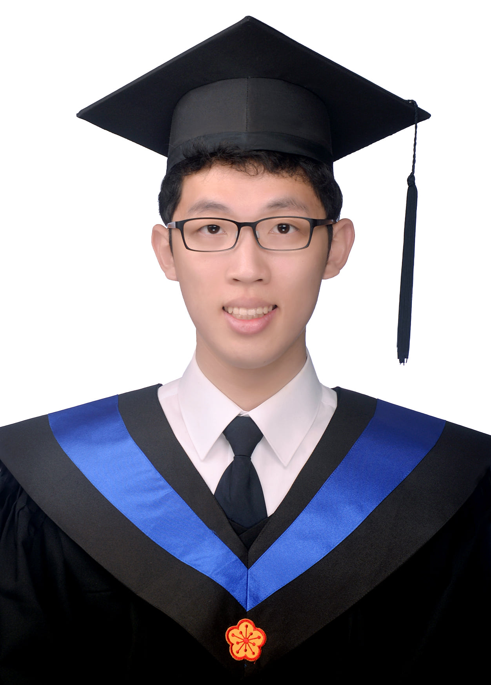

|
Han-Mo Ou
|
 |
Ph.D. Student at the University of Illinois Urbana-Champaign [CV]
Email: hanmoou2 AT illinois DOT edu
Office: 411 Coordinated Science Laboratory, 1308 W Main St, Urbana, IL
[LinkedIn] [Google Scholar]
|
About Me
Hello!
I am a Ph.D. student in the Electrical and Computer Engineering (ECE) department at the University of Illinois at Urbana-Champaign (UIUC), advised by Prof. Naresh Shanbhag at the Coordinated Science Lab (CSL).
My research interests lie in VLSI for signal processing and communications, with a focus on developing efficient and high-performance circuits for communication systems.
I earned my B.S.E. degree in Electrical Engineering from National Taiwan University (NTU) in 2020 and my M.S. degree in ECE from UIUC in 2022.
I have gained industry experience through internships at Cadence in the summer of 2019 and IBM Research in the summer of 2024.
Awards
2024-2026 Taiwan Study Abroad Fellowship, MoE Taiwan
2024 JUMP 2.0 Center for Ubiquitous Computing (CUBIC) Scholar Leadership Award
First Prize Award, Undergraduate Digital Design Section, 2020 IC Design Contest, MoE Taiwan
2019-2020 Undergraduate Research Project Grant, MoST (now NSTC) Taiwan
Third Prize, 2019 NTUEE Undergraduate Innovation Award
2017 Fall Acamedic Award, NTU
2017 Spring Acamedic Award, NTU
|